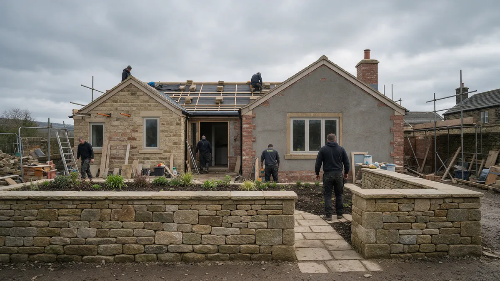

Services · Garden walls and small structures
Walls, piers and the small stuff.
Garden and boundary walls, gate piers, steps, bin stores, planters and low retaining walls. Small jobs, but they stand or fall on the footing and the coping, so that is where we spend the time.

Generated photoWhat we hear
Sound familiar?
- The front wall is leaning into the path.
- We want gate piers that match the house.
- The steps are uneven and somebody is going to go over.
- We need a bin store that does not look like a bin store.
On the job
What happens
- Dig a footing that suits the ground and the height of the wall, not a token trench.
- Set out so the wall follows the boundary and the levels work with the path.
- Build in a mortar that suits the stone or brick, with movement joints on a long run.
- Retaining walls get drainage behind them, because water is what pushes walls over.
- Coping on top, bedded and pointed, so the water runs off instead of in.
Sample jobs
Garden walls and small structures, from our work

Made up sample jobs, with pictures generated for this demo.
Questions
Common questions
How high can a garden wall be?
There are limits before it needs planning permission, and they are lower next to a highway. Heights and rules vary, so check with your council before you commit to a design.
Whose wall is it?
Worth working out before anyone starts. The deeds usually say, and if it sits on the boundary it may be a party fence wall, which brings next door into it. We will raise it if it looks like that sort of wall.
Why do walls lean?
Nearly always the footing, water behind it, or no coping on top. A wall that has stood for eighty years and then moves has usually had something change around it, like a new drive or a raised bed.
Do you take the old one away?
Yes, and the stone is often worth putting back in the new wall. We will tell you if yours is.
Want somebody to come and look?
Tell us what you are after and where you are. We will come out, measure up and put it in writing.